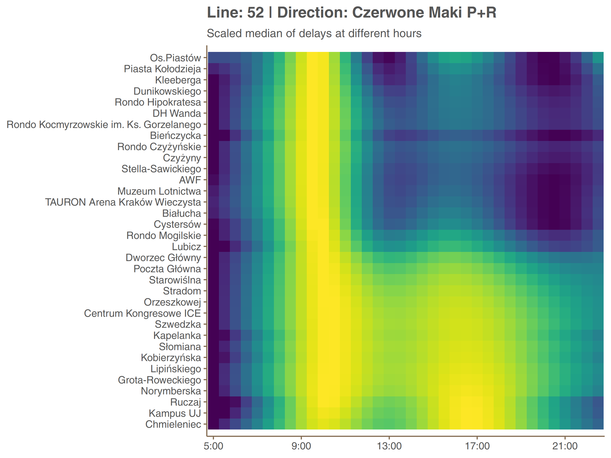

When I was learning how to work with APIs in R few months ago, I discovered there is an API for tram locations and departures in my home town - Kraków. Since then I’ve been planning the analysis of tram delays based on it and eventually I’ve taken it as my personal summer project.
The entire report in Polish is dozens page long. Here, on the English side of the blog, I omit the overview of data preparation and technical details, which are important but not so much interesting and present several selected insights.
One important remark: collected data correspond to holiday timetable and are not representative for the ordinary one.
Distribution
Let us start with the distribution of delays.

A pessimist could say that more than half of the trams depart late. An optimist, on the other hand, that the vast majority of delays small ones, up to 2 minutes and 1 minute delays are negligible because the round-off error equals 1 minute. Anyway, the average lateness in the sample equals one minute and 0.3 seconds, and the standard deviation is one minute and 23 seconds (1.39 minutes). This distribution can not be easily identified with any of the well-known distributions from textbooks, regardless of whether we treat lateness as a discrete variable or as a continuous but fraught with rounding errors.
Maps
Two interactive maps below show mean delays on stops and delay changes between them.
The mean delay on a particular stops almost always summarizes delays on different paths with this stop in a middle. Those different paths (at least two opposite directions) can differ, sometimes strongly, from each other with respect to average delay. Therefore, I specify mean delay on each path in pop-ups. As system measures departures, not arrivals, there are missing values near loops (NA for names, NaN for values).
One observation from the second map
Does it appear to you that intensive-red segments (big delay increase) tend to lie next to intensive-blue (big decrease)? Yes, they are! The graph below shows mean delay change after a given stop against the change before it.

Imagine that some tram has no delay at a given stop (let say: stop 0). At the consecutive stop (stop 1) it has 2 minutes delay and at the next one (stop 2), one minute. From a stop 1 perspective there have been 2 minute increment before it and -1 minute increment (reduction) after. Such scenario will be plotted at the point (2, -1) in this coordinate system.
So as you can see, trams usually reduce big delay increments (not fully however) just after they occur.
Sample line delay quantiles
Let’s take a closer look at delays on a specific line. Delays rounded to integers were causing underperformance of models so I’ve decided to simulate continuity be jittering9adding uniform noise).
df52 <- dplyr::filter(report, number == 52, direction == 'Os.Piastów')
df52$delay <- jitter(as.numeric(df52$delay), amount = 0.5)
df52$delay[df52$delay < 0] <- 0df52b <- dplyr::filter(report, number == 52, direction == 'Czerwone Maki P+R')
df52b$delay <- jitter(as.numeric(df52b$delay), amount = 0.5)
df52b$delay[df52b$delay < 0] <- 0I’ve been using additive quantile regression models and that for two reason. Firstly, they are distribution agnostic (upto computational aspects) which is a great advantage in our case. Secondly they offer very nice interpretation from a passenger point of view. Suppose someone in hurry who can not tolerate delay greater then 3 minutes on her stop. Quantile model offers estimation of her success or failure probabilities. Information that mean delay on this stop at certain hour equals 2.5 minute would not be valuable in such a scenario.
Here are graphs showing delay quantiles of line 52.
qgam_model_A <- mqgam(delay ~ ti(seq_num, k = 30) + ti(minutefs, k = 8) + ti(seq_num, minutefs), data = df52, qu = seq(0.2, 0.9, 0.1))
qdo(qgam_model_A, fun = summary)
qgam_model_B <- mqgam(delay ~ ti(seq_num, k = 30) + ti(minutefs, k = 8) + ti(seq_num, minutefs), data = df52b, qu = seq(0.2, 0.9, 0.1))
qdo(qgam_model_B, fun = summary)Let’s take a look, for example, for the Grota-Roweckiego stop on second plot (5th from the end). The bolded line, corresponding to median is at the height of about 1 minute 40 seconds. It means that half of delays is smaller than that. Line corresponding to 80% is at the height of around 3 minutes. So you have about 80% chances that your delay at Grota-Roweckiego will be less than 80%, and so on.
We can also see how the delay varies at time. The plot below shows the median delay on Dworzec Główny (Main Railway Station) in Os. Piastów direction (upper plot above).
The more interesting thing is to see how do peaks and valleys of delay along a day change from one stop to another. It is shown on graphs below. Because differences in delays are greater between stops than between hours, values of median delay are all scaled to [0, 1] within each stop. It is like taking only colors from the plot above and not looking at the height of the curve.

In both directions a different peak (afternoon and morning respectively) is dominant. The second is present but only at the fragment between Czerwone Maki P+R loop and surroundings of Main Railway Station (Dworzec Główny). One may think that this kind of symmetry (even if distorted) is something to be expected but actually it rarely happen on different lines. It would be interesting to compare those data with passenger flow.